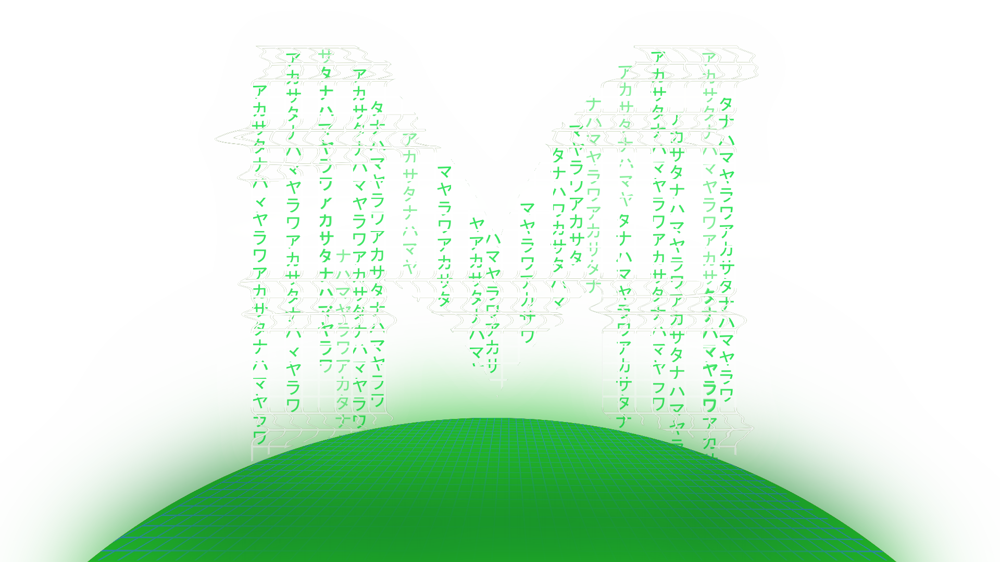

Willkommen auf meinem Profil!
Freut mich, dass du reinschaust!
Mein Name ist
Marvyn Melzer
Angehender
Fachkraft für Veranstaltungstechnik war mein erster Ausbildungsberuf, in dem ich bis 2019 aktiv war. Dort habe ich gelernt, wie man komplexe technische Systeme versteht, aufbaut und sicher betreibt. Ob Licht, Ton oder Bühnentechnik – ich habe früh gelernt, strukturiert zu arbeiten, Probleme schnell zu analysieren und technische Abläufe zuverlässig umzusetzen. Dieses technische Fundament begleitet mich heute in der Softwareentwicklung.